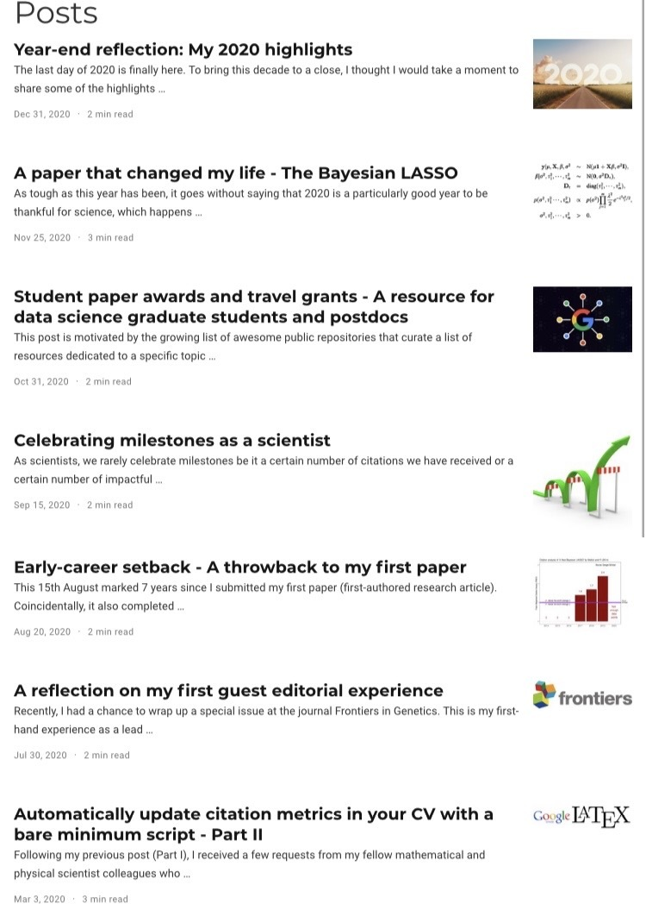
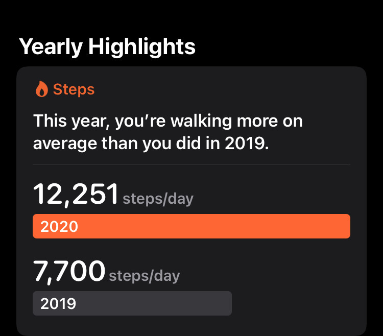
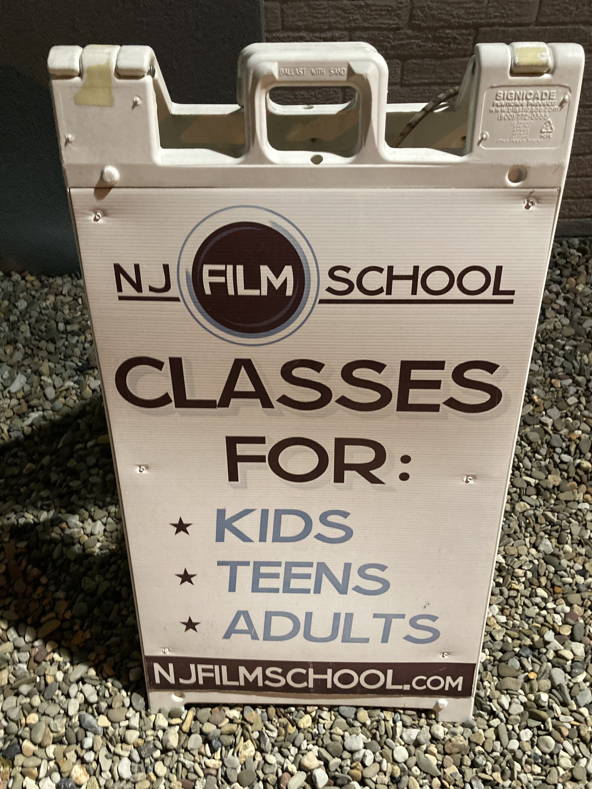
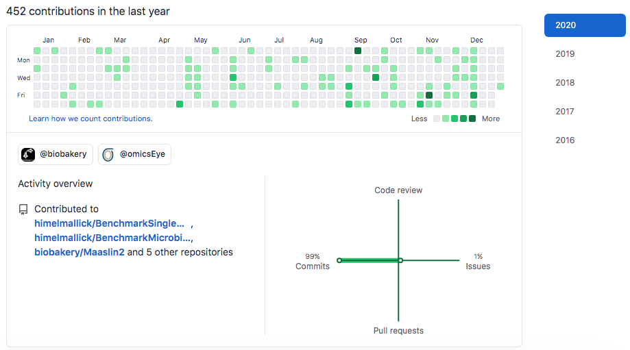
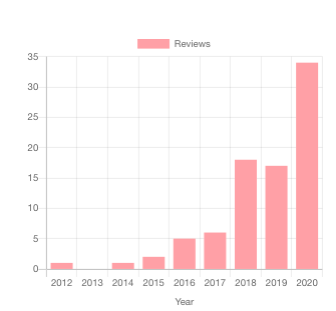

Year-end reflection: My 2020 highlights

The last day of 2020 is finally here. To bring this decade to a close, I thought I would take a moment to share some of the highlights from this year in the form of pictures and anecdotes.
As much as I would love to remember this year as a year of setbacks and bottlenecks, in retrospect, it has been packed with some very surprising yet noteworthy moments.
On a personal level, 2020 has been a year of many firsts, much as has been the case for the society in general where we have together achieved incredible things as a community despite challenging circumstances. From delivering vaccines in record time to abiding by the social distancing guidelines to adjusting to the new normal, we have come a stunningly long way in a short period of time, which I believe, prepares us well for a pandemic-proof future in 2021 and beyond.
Here are some things that went surprisingly well during the entire thriving process:
New year resolutions
One of my new year resolutions in 2020 was to write at least one piece of writing every month (technical or non-technical). This seemed like a lofty goal at the outset but I am glad that I was able to break this seemingly hard-to-attain goal into manageable chunks to make it a reality. In my mind, this was a monumental personal milestone as it allowed me to build a decent writing habit which has been difficult historically.

>10000 steps per day
Another seemingly unattainable habit (based on past experiences) was consistently hitting an average >10,000 steps a day for an extended period of time (i.e. more than a few weeks or months), which I was able to achieve despite the almost year round lockdown. Considering all the obstacles that stood in the way this year, it was a truly transformative experience to start 2021 on a lighter note!

Getting back into creative writing
Towards the end of the year, I was fortunate to enroll in a screenwriting class. Among other things, this was my best chance at getting back into creative writing. As a result of this experience, I was able to write a few short scripts in addition to a few amateur poems which was enough to eventually claw my way to get my writer’s groove back :)

Personal commit record
In the meantime, almost accidentally, I broke my own record of GitHub commits, which was more than all the previous years combined. I couldn’t be more happy about this unexpected milestone!

Personal peer-review record
By the same token, I couldn’t be more appreciative of the opportunity to give back to the scientific community through voluntary contributions in the form of peer-review activities. Consequently, I was able to break my own record of Publons-verified peer-reviews, which was again accidentally more than all previous years.

Apart from these, there have been a few first-of-its-kind professional highlights this year as well:
- Completed my first internship as a mentor
- Edited my first special issue as a lead editor
- Published my first Bioconductor package
- Delivered my first keynote presentation
- Organized my first JSM invited session (scheduled for JSM 2021)
With that note, I would love to hear your highlights from the year, so be sure to leave a comment :)
Wishing you and yours a safe, healthy, and prosperous new year! Onwards and upwards!
Featured image source: https://www.the-scientist.com/news-opinion/what-to-expect-in-the-publishing-world-in-2020–66882
Himel Mallick, PhD, FASA
Principal Investigator
Applied statistician with broad research interests in biomedical and applied data science, working on problems in machine learning and computational biology.